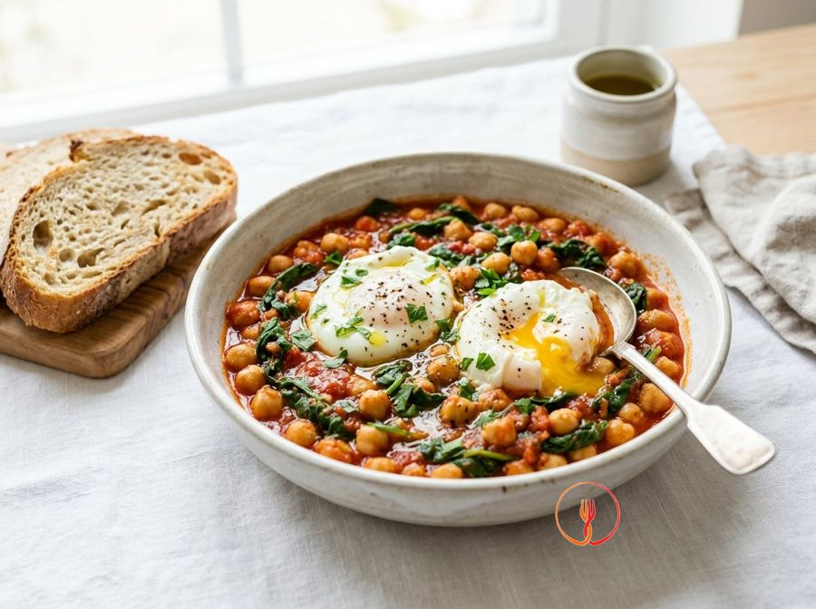

Umido di Ceci e Spinaci con Uova in Camicia
Un piatto povero ma completo, tipico della cucina rurale europea, che unisce legumi e verdure a foglia verde. L'uovo cotto direttamente nel sugo crea un piatto cremoso e molto economico.
Ingredienti
- Ceci precotti480 g
- Spinaci freschi (o surgelati)400 g
- Passata di pomodoro200 ml
- Aglio1 spicchio
- Uova4 pz
- Pane casereccio4 fette
- Olio extravergine d'oliva20 ml
Allergeni
Uova, Glutine
Procedimento
- Inizia versando 20 ml di olio extravergine d'oliva in una casseruola ampia e aggiungi lo spicchio d'aglio leggermente schiacciato. Scalda a fiamma media per circa 2 minuti finché l'aglio non sprigiona il suo aroma e diventa dorato, poi rimuovilo con una pinza per evitare che il sapore diventi amaro. L'obiettivo è ottenere un olio profumato che farà da base aromatica a tutto il piatto. Il consiglio dello chef: non lasciare mai che l'aglio scurisca troppo, o darà un sapore acre agli spinaci.
- Aggiungi i 400 g di spinaci (se freschi, lavali bene; se surgelati, usali direttamente) nella casseruola con l'olio caldo. Copri con un coperchio per i primi 2 minuti a fiamma vivace per facilitare l'appassimento grazie al vapore naturale della verdura. Mescola delicatamente con un cucchiaio di legno finché il volume non si sarà ridotto drasticamente e il colore diventerà verde brillante. Il consiglio dello chef: non cuocerli troppo in questa fase, poiché continueranno la cottura insieme ai ceci.
- Versa nella casseruola i 480 g di ceci precotti, dopo averli sciacquati accuratamente sotto l'acqua corrente per eliminare il liquido di governo. Unisci i 200 ml di passata di pomodoro e aggiungi circa mezzo bicchiere d'acqua calda (circa 100 ml) per regolare la densità iniziale. Mescola bene per distribuire il pomodoro e gli aromi tra i legumi e la verdura. Il consiglio dello chef: sciacquare bene i ceci rimuove l'eccesso di sodio e migliora la digeribilità del piatto.
- Regola di sale e lascia sobbollire il composto a fuoco dolce per circa 10 minuti, mantenendo la casseruola parzialmente coperta. Durante questo tempo, l'acqua evaporerà e i sapori della passata e degli spinaci si fonderanno con i ceci, creando una consistenza cremosa e densa. Il risultato deve essere un umido ricco, non una zuppa liquida, con il sugo che avvolge perfettamente ogni ingrediente. Il consiglio dello chef: schiaccia qualche cece con la forchetta contro il fondo della pentola per rendere il fondo di cottura ancora più vellutato.
- Utilizzando il dorso di un cucchiaio, crea quattro piccoli incavi (o 'nidi') ben distanziati tra loro all'interno del composto di ceci e spinaci bollente. Questi spazi serviranno ad accogliere le uova, permettendo loro di cuocere in modo uniforme senza disperdersi nel sugo. Assicurati che il fondo della casseruola sia ben coperto dal sugo per evitare che l'uovo si attacchi. Il consiglio dello chef: assicurati che il sugo stia sobbollendo dolcemente prima di procedere con il passaggio successivo.
- Rompi con delicatezza un uovo alla volta, versandone uno in ogni incavo precedentemente creato nella casseruola. Cerca di mantenere il tuorlo integro e centrato nell'albume per un risultato estetico impeccabile. Questa tecnica di cottura permette all'uovo di assorbire gli umori del sugo mentre la base si rassoda. Il consiglio dello chef: rompi l'uovo prima in una tazzina da caffè per assicurarti che sia freschissimo e per evitare che frammenti di guscio cadano nel cibo.
- Copri immediatamente la casseruola con un coperchio che chiuda bene e prosegui la cottura a fiamma bassissima per 3 o 4 minuti al massimo. Il calore intrappolato dal coperchio cuocerà la parte superiore dell'uovo tramite il vapore, mentre il fondo cuocerà per contatto con il sugo. Dovrai ottenere un albume perfettamente bianco e rappreso, ma un tuorlo ancora fluido e cremoso al tatto. Il consiglio dello chef: non togliere il coperchio continuamente, o la dispersione di vapore allungherà i tempi di cottura indurendo eccessivamente la base dell'uovo.
- Mentre le uova finiscono di cuocere, tosta le 4 fette di pane casereccio su una piastra rovente o in un tostapane finché non diventano croccanti e dorate su entrambi i lati. La croccantezza del pane è fondamentale per contrastare la morbidezza dell'umido e dell'uovo. Disponi una fetta di pane sul fondo di ogni piatto individuale o accanto al bordo. Il consiglio dello chef: strofina leggermente il pane tostato con un po' di aglio fresco se desideri una nota aromatica più decisa.
- Utilizzando una paletta larga o un mestolo piatto, preleva delicatamente una porzione di ceci e spinaci insieme a un uovo integro e adagiali sopra o accanto alla fetta di pane. Completa ogni piatto con una spolverata di pepe nero macinato al momento e un leggerissimo filo d'olio a crudo per esaltare i profumi. Servi immediatamente mentre il tuorlo è ancora fondente. Il consiglio dello chef: servi in piatti fondi preriscaldati per mantenere la temperatura ideale del piatto durante l'assaggio.
Valori nutrizionali (stima)
| Per porzione (310 g) | Per 100 g | |
|---|---|---|
| Energia | 1736 kJ / 415 kcal | 560 kJ / 134 kcal |
| Proteine | 20.8 g | 6.7 g |
| Carboidrati | 45.2 g | 14.6 g |
| di cui zuccheri | 5.4 g | 1.7 g |
| Grassi | 14.8 g | 4.8 g |
| di cui saturi | 2.9 g | 0.9 g |
| Fibre | 11.5 g | 3.7 g |
| Sale | 1.48 g | 0.5 g |
Valori stimati con l'AI su dati medi CREA / USDA: sono indicativi e non sostituiscono il parere di un medico o di un nutrizionista.
Apri la ricetta nell'app per la lista della spesa, le schede ingredienti e i negozi vicini.